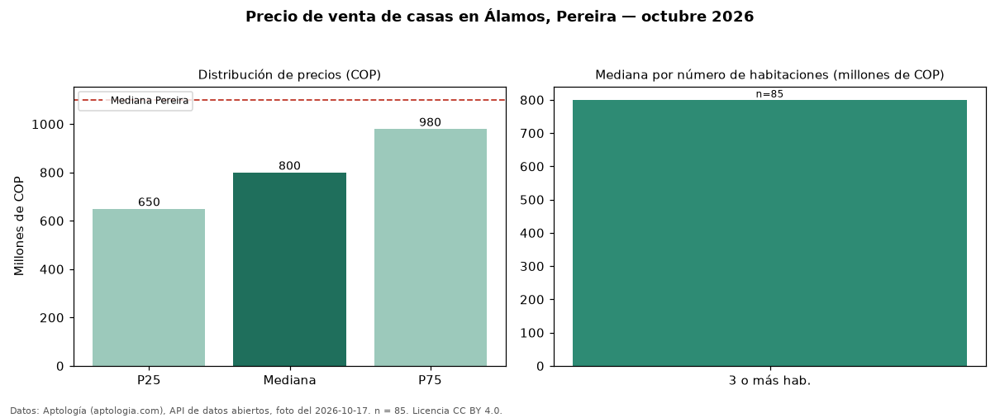

Precio de venta de casas en Álamos, Pereira — octubre 2026
En Álamos, Pereira, la mediana de precio de venta de casas es COP 800 millones, según 85 avisos vigentes. Frente al total de Pereira (COP 1,10 mil millones), el barrio está 27 % por debajo. Con la mediana de arriendo del mismo barrio (COP 4.750.000 al mes), el arriendo anual equivale a 7,1 % del precio de venta: una aproximación gruesa a la rentabilidad bruta, porque compara medianas de ofertas distintas. El segmento con más oferta es el de 3 o más habitaciones (85 avisos, mediana COP 800 millones). 98 % de los avisos incluye parqueadero. Por mediana, es el puesto 14 de 23 barrios de Pereira con al menos 30 avisos de casas en venta: en la franja media. La mitad central de los avisos va de COP 650 millones a COP 980 millones (razón 1,5), una dispersión moderada. Datos: Aptología (aptologia.com), API de datos abiertos, licencia CC BY 4.0 — https://www.aptologia.com/casas-en-venta/pereira/alamos. Archivos: PDF de 2 páginas, CSV con las cifras y gráfica PNG.

| Avisos únicos | 85 |
|---|---|
| Percentil 25 | COP 650.000.000 |
| Mediana | COP 800.000.000 |
| Percentil 75 | COP 980.000.000 |
Fuente: avisos vigentes de portales inmobiliarios recopilados por Aptología, deduplicados (mínimo 30 avisos únicos por celda). Precios pedidos, no cerrados. Fecha: 2026-10-18.